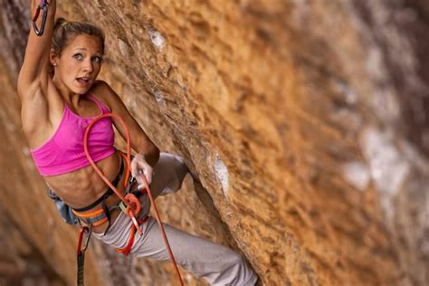
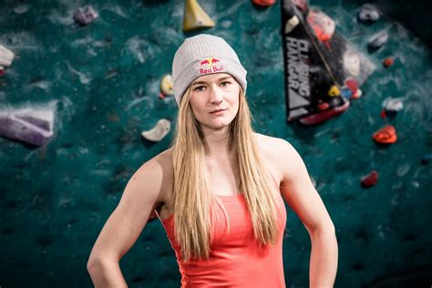
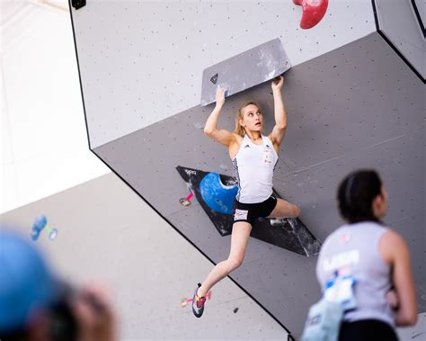
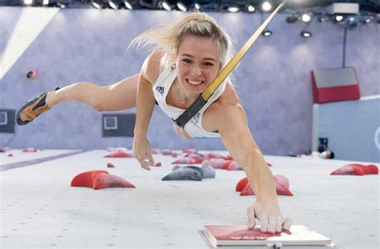

Sasha DiGiulian (États-Unis) - Connue pour ses réalisations en escalade de difficulté et en escalades en grandes voies.
Shauna Coxsey (Royaume-Uni) - Excellente grimpeuse de bloc, multiple championne de la Coupe du Monde d'Escalade de Bloc.
Janja Garnbret (Slovénie) - Dominante dans toutes les disciplines de l'escalade, elle a remporté de nombreux titres en escalade de difficulté, en bloc et en combiné.
Julia Chanourdie (France)
Ces grimpeurs sont parmi les meilleurs du monde, ayant remporté des compétitions internationales majeures, établi des records et repoussé les limites de l'escalade dans ses différentes disciplines. Ils sont des exemples de talent, de détermination et d'engagement envers leur sport.